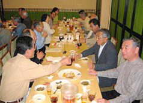
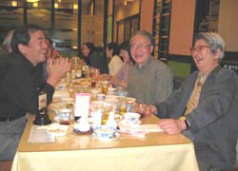
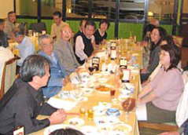
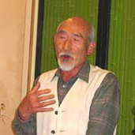
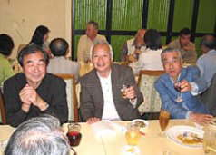
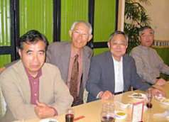

| 見たい項目をクリックして下さい | |||||||||
|
| 行 事 記 録 （詳 細 - ２０） |
|
さいかちの会創立２周年
記念講演会・第２回総会・懇親会 開催される |
| 掲載日 ０４−４−１９ |
|
行 事 名 |
記念講演会・第２回総会・懇親会 |
|
研 究 部 会 |
特別企画 |
|
実 施 日 |
０４年４月１８日（日） |
|
実 施 場 所 |
横浜市歴史博物館研修室（記念講演会・第２回総会） 懇親会（センター北 モザイクモール５階 中華料理上海園） |
|
参 加 者 |
３０名 会員２９名 （天野、市田、伊原、今井、小方、尾田、小野寺、金田、小杉、 古米、佐伯、佐々木、佐藤、塩見、柴田、清水、鈴木、須田、須藤、砂川、竹内、 坪井、徳永、富岡、中村、成沢、西田、福野、堀、吉田） （３つの内何れかに参加） 会員外１名（講演会のみ参加） |
| 記 録 | 西田 進 |
|
概 要 |
記念講演会 １４：００〜１５：００ 横浜市歴史博物館 学芸員 平野卓治先生 「漢委奴国王」 金印と文字の受容 第２回総会 １５：３０〜１６：３０ ２００３年度活動報告・収支決算、２００４年度活動計画・収支予算等の承認 懇親会 １７：００〜１９：００ |
| 記念講演会 １４：００〜１５：００ 横浜市歴史博物館研修室 横浜市歴史博物館 学芸員 平野卓治先生が、『「漢委奴国王」 金印と文字の受容』と題して、天明４年（1784）に志賀島で偶然発見された金印を手がかりに、倭人が漢字を受容していった過程を、分り易く、楽しく説明して下さった。 |
Ａ |
|
|
| 第２回総会 １５：３０〜１６：３０ 横浜市歴史博物館研修室 堀会長を議長に選出し、以下の議案を審議・承認した。 １号議案 ２００３年度活動報告 ２号議案 ２００３年度収支決算および監査報告 ３号議案 会則の改正について ４号議案 世話役候補 ５号議案 ２００４年度活動計画 ６号議案 ２００４年度収支予算 |
|
||
| 懇親会 １７：００〜１９：００ センター北
モザイクモール５階 中華料理上海園 下の写真をご覧下さい。 |
|||
|
|||||||||||
|  | A |  | A |  | |||||||
| A | |||||||||||
|  |  |  | |||||||||
| 福野さんの海底考古学は改めて お伺いしたいようなお話でした |
全員のお顔が写っていなくて済みません |
||||||||||
| 記録の一覧表 に戻る |